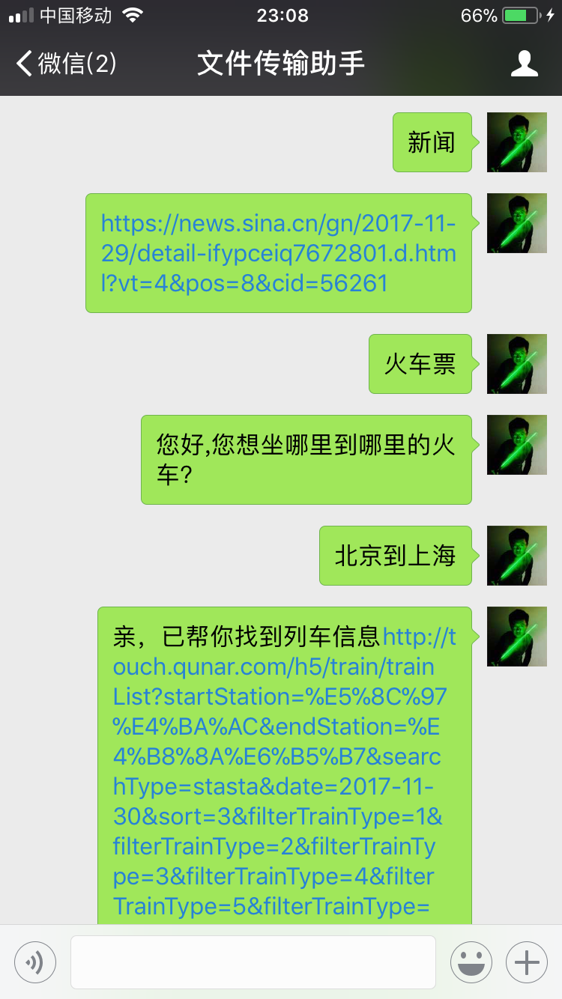
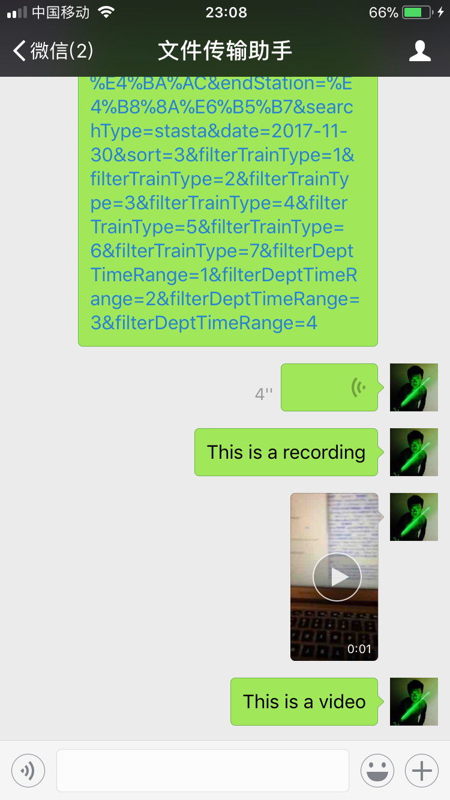

#coding=utf8 import requests import itchat from json import JSONDecoder KEY = 'eb720a8970964f3f855d863d24406576' key = "2pf3fTPxGdBXiDQWg851YE5hdHWC7xkF" secret = "Qg4v2klgvuWwGRYExXUOFUEcGzmVpn_H" def get_response(msg): apiUrl = 'http://www.tuling123.com/openapi/api' data = { 'key' : KEY, 'info' : msg, 'userid' : 'Arthur_cfc', } try: r = requests.post(apiUrl, data=data).json() print(r) if r.get('code')==100000:##is a text return r.get('text') elif r.get('code')==200000:##is a url return r.get('text')+r.get('url') elif r.get('code')==302000:##is a news return r.get('list')[0]["detailurl"] except: return def get_response1(msg): http_url = 'https://api-cn.faceplusplus.com/facepp/v3/detect' filepath = msg["FileName"] data = { "api_key": key, "api_secret": secret, "return_landmark": "0", "return_attributes": "gender,age,emotion,ethnicity,beauty,skinstatus" } file = {"image_file": open(filepath, "rb")} response = requests.post(http_url, data=data, files=file) req_con = response.content.decode('utf-8') req_dict = JSONDecoder().decode(req_con) return req_dict @itchat.msg_register(itchat.content.TEXT) def tuling_reply(msg): defaultReply = 'I received: ' + msg['Text'] reply = get_response(msg['Text']) msg.user.send( reply or defaultReply) @itchat.msg_register(itchat.content.PICTURE) def tuling_reply(msg): msg['Text'](msg['FileName']) import cv2 import matplotlib.pyplot as plt from matplotlib import cm reply = get_response1(msg) img_bgr = cv2.imread(msg['FileName']) gray = cv2.cvtColor(img_bgr,cv2.COLOR_BGR2GRAY) plt.axis('off') plt.imsave(msg['FileName'],gray,cmap = cm.gray) itchat.send_image(msg['FileName'],toUserName='filehelper') defaultReply = 'I received a picture ' import os os.remove(msg['FileName']) itchat.send(str(reply), toUserName="filehelper") @itchat.msg_register(itchat.content.VIDEO) def tuling_reply(msg): msg.user.send( "This is a video") @itchat.msg_register(itchat.content.RECORDING) def tuling_reply(msg): msg.user.send( "This is a recording") itchat.auto_login(hotReload=True) itchat.run()
Functions:
1. Able to reply differently when receiving different input. If input plain text, the tuling robot will chat with you. If input a picture, it will convert it to grayscale image and send it to you. If input is a recording or video, it will respond "It's a recording" or "it's a video" respectively.
2. Able to give links base on the user's input. This includes news, train and airlines.
evidence:
Because I don't have another device at my hand tonight, I redirect all the reply to filehelper to run the test.


Flowchart:

document:bot.docx
Reflection:
When doing this project, I realize the importance of using the 3rd-party api(s) to help me achieve desired function. In broader scale, It is the importance of doing open-source and build the programs cooperatively. For example, when I was asked to implement a function that can return a url for booking tickets or searching news, I only thought about the web-spider programs. I struggled a lot to implement that. However, the tuling api can actually do it for me. In fact, using the tuling api, it only takes a few line of codes to implement this function. In the future, I will read the docs of api(s) more carefully and benefit from them to the maximum extent.
Besides, I learned a lot about how the api(s) can be requested. I learned that in order to use an api, we need the api’s url, it’s “key”, and our data. The data should be presented in the format of a dictionary. Depending on different apis, the requirements on the content of the dictionary may vary, but essentially they need to have your ID, what function you are asking for, and the parameters. In python, there is a package called “request” that handles the posting and receiving of the communication between you can d the api really well. In the process, the dictionary of data need to be transcoded to “json.”
At last, doing this project also reminds me of many python grammar, data types, and useful function and packages. When doing the grayscale convergence, I recalled that we have used the package “opencv” to do this before, so I reviewed the works I’ve done that time. The os operations, the matplotlib’s functions are also used in the process.
After doing this project, I think my ability to learn new things improved. When exploring another module in the future, I will read the documentation more carefully.